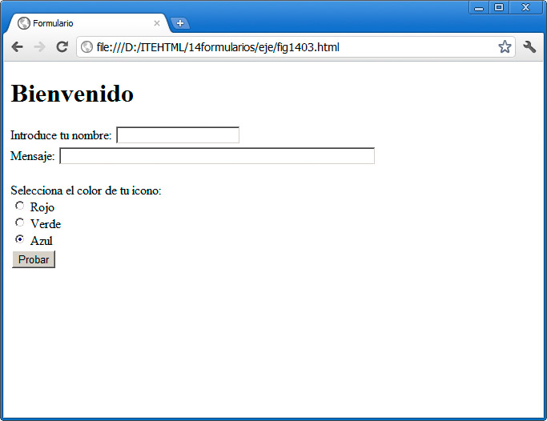
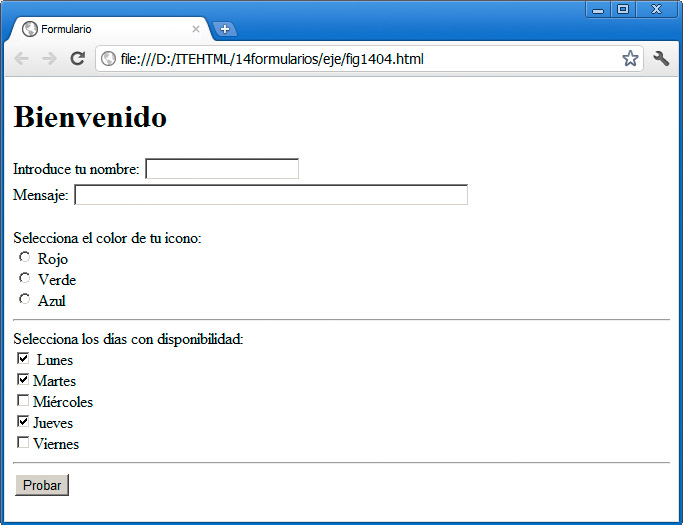
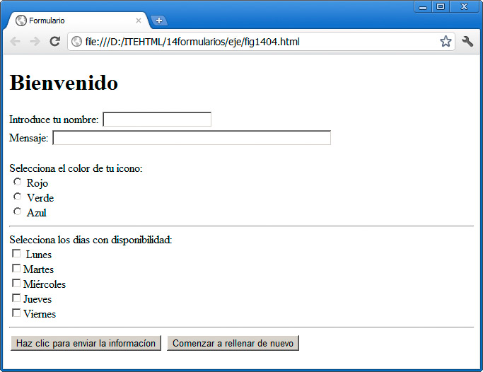
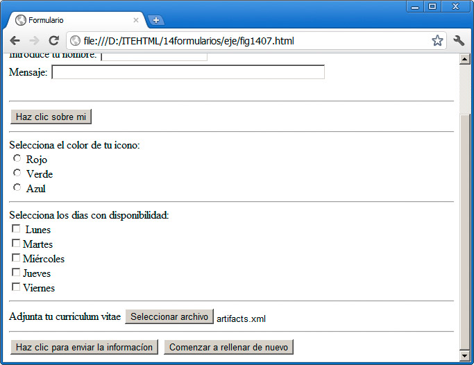
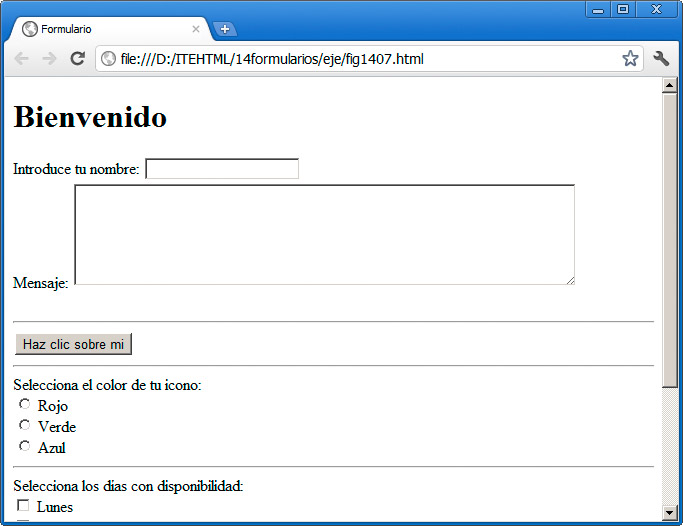
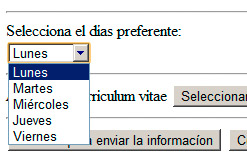
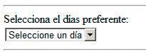
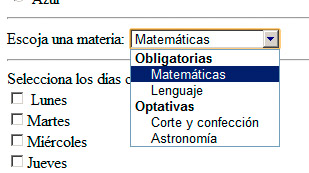
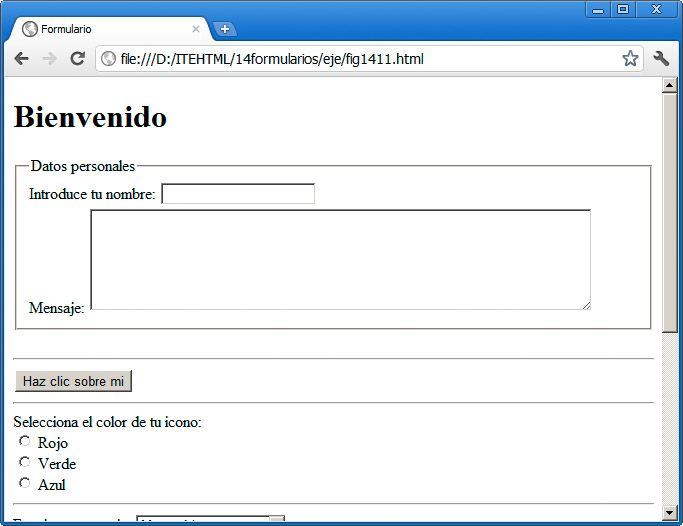

Un formulario puede contener cualquier tipo de recurso, como ya hemos dicho antes, pero hay algunos campos que son específicos del formulario y cuyo valor se enviará cuando éste se remita.
Cuadro de texto
Un cuadro de texto es un espacio definido para que el usuario introduzca un texto libre. Se crea con:
Introduce tus apellidos: <input type="text" name="apellidos" />
Como todos los elementos de un formulario, además del tipo se establece un nombre único mediante el parámetro name. Ese valor nos permite manipular el valor mediante scripts del lado del servidor o utilizando JavaScript.
Nota
La etiqueta <input> cuenta con un copioso número de parámetros. No todos son aplicables a todas las etiquetas input; depende del tipo que indiquemos en el valor type. Más tarde veremos algunos valores.
Cuadro de contraseña
Los campos de contraseña son iguales que los de texto, pero al escribir dentro de ellos sólo se ven asteriscos o algún carácter similar, para evitar que otras personas alrededor puedan ver la clave.
Introduce tu clave: <input type="password" name="clave" />
Botones radiales
El usuario puede seleccionar uno de los valores del bloque, pero sólo uno de ellos; son excluyentes.
Selecciona el color de tu icono:<br />
<input type="radio" name="coloricono" value="rojo" /> Rojo<br />
<input type="radio" name="coloricono" value="verde" /> Verde <br />
<input type="radio" name="coloricono" value="azul" /> Azul <br />
Dos detalles fundamentales para que este conjunto funcione:
- El valor indicado en name tiene que ser el mismo en todas las opciones; así es como el navegador sabrá qué elemento del conjunto está seleccionado.
- Se incorpora un parámetro nuevo, value. Cuando el formulario se envíe para ser procesado, el campo coloricono de nuestro ejemplo tomará el valor indicado en value. Este valor no tiene por qué coincidir con el texto que mostramos a continuación.
El conjunto se ve así, tras seleccionar la tercera opción:

Casillas de verificación
En este tipo (denominado checkbox) el usuario sí puede seleccionar varias opciones. Todas ellas se remitirán para ser procesadas, asociadas bajo el mismo nombre, indicado en el parámetro name:
<hr />Selecciona los días con disponibilidad:<br />
<input type="checkbox" name="dias" value="l" /> Lunes<br />
<input type="checkbox" name="dias" value="m" />Martes<br />
<input type="checkbox" name="dias" value="mm" />Miírcoles<br />
<input type="checkbox" name="dias" value="j" />Jueves<br />
<input type="checkbox" name="dias" value="v" />Viernes<br />
Bajo el valor dias se transmitirá a la página web encargada de procesar el resultado del formulario una secuencia con todos aquellos cuadros que hayan sido activados. Se transmitirá el valor que aparece dentro de cada value, únicamente. Por ejemplo, si enviamos el formulario de la figura, se mandará la secuencia l, m y j.

Nota
En el ejemplo hemos reemplazado los caracteres con tilde por entidades html. Por ejemplo, la secuencia í se reemplazará por una "í". Es apropiado hacer estos cambios para asegurarnos de que nuestra página se muestra siempre correctamente. Los editores web suelen hacerlo por nosotros. No obstante, si tenemos que hacerlo, podemos encontrar una lista de entidad html en varios sitios, por ejemplo en http://www.w3schools.com/tags/ref_entities.asp
Botón de envío
Un campo de tipo submit generará un botón que, al ser pulsado, hará que se aplique la acción indicada en el formulario:
<input type="submit" value="Haz clic para enviar la informacíon" />
Botón de limpieza
Un campo de tipo reset eliminará todo el contenido introducido en un formulario, dejándolo limpio de nuevo. La figura muestra el botón anterior y uno de tipo reset.
<input type="reset" value="Comenzar a rellenar de nuevo" />

Botón estándar
También podemos crear un botón que no sea del tipo submit o reset, sino genérico, mediante el tipo button.
<input type="button" value="Haz clic sobre mi" />
Ese botón tal y como está no hace absolutamente nada. Podemos pasarnos el día entero pulsándolo sin conseguir ningún resultado. Para que esos botones interactuen tenemos que definir en ellos el evento onclick. Así podremos asociarle una función JavaScript, cargar una página en el lado del servidor o simplemente remitir una información por correo electrónico.
<input type="button" value="Haz clic sobre mi" onclick="JavaScript:window.location='http://www.google.es'" />
Este botón sí realiza ya una operación. Al hacer clic sobre él, se ejecuta una pequeña acción de JavaScript (window.location='http://www.google.es'"), que hace que el navegador salte a la página indicada.
Nota
Más tarde analizaremos los eventos y su funcionamiento.
Archivo
Un elemento input de tipo file nos sirve para enviar un archivo al servidor. Se emplea con frecuencia para enviar alguna imagen, documentos de texto, etc. Podemos remitir cualquier tipo de archivo.
Adjunta tu curriculum vitae <input type="file" name="curriculum" />
El resultado es éste:

Valores ocultos
El tipo hidden se emplea para remitir información al servidor dentro de los formularios, pero sin que esta información se muestre en la pantalla. Su sentido es el de proporcionar datos complementarios, como podría ser la fecha, desde dónde se ha rellenado el formulario o cualquier otro aspecto que no necesitamos que rellene el usuario, sino que podemos definir por otros medios. Todo lo que podamos evitar que sea rellenado aligerará el formulario y favorecerá la interactuación del usuario con nuestra página.
<input type="hidden" name="campaña" value="primavera" />
Más tipos
La aparición de HTML5 nos trae varios tipos de campo <input> añadidos. En concreto las nuevas opciones son las siguientes: color, date, datetime, datetime-local, month, week, time, email, number, range, search, tel y url.
En la actualidad casi todos ellos se muestran como cuadros de texto normales pero, a medida que se implante el estándar, iremos viendo cómo se producen cambios. Por ejemplo, si definimos un campo indicando que será de tipo tel (teléfono) y accedemos mediante un dispositivo móvil, el teclado se cambiará automáticamente al numérico; o si definimos un campo de tipo email (correo), el navegador será capaz de realizar una validación previa para comprobar si es una dirección correcta.
En conclusión, puede ser interesante ir conociéndolos e incorporándolos a nuestra rutina, al diseñar formularios.
Otros campos diferentes a input
En los formularios emplearemos otros recursos diferentes a los que nos facilita la etiqueta input.
Área de texto
Un área de texto es similar a los cuadros creados con <input type="text"> pero más amplios, pensados para albergar secuencias de texto tan largas como sea preciso. Se crean mediante la etiqueta <textarea> y en ellas podemos indicar el tamaño visual del campo mediante los parámetros cols (columnas) y rows (filas).
<textarea name="mensaje" cols="60" rows="6" /> </textarea>
La figura muestra la etiqueta anterior:

Como se puede observar, esta etiqueta lleva su cierre correspondiente. Si colocamos cualquier texto entre ambas etiquetas, se mostrará dentro del cuadro al cargarse la página.
Listas desplegables
La etiqueta <select> y </select> se utiliza para crear una lista desplegable de opciones, donde el usuario puede seleccionar una de ellas. Su sentido es similar al de los botones radiales, pero en un espacio más reducido, sobre todo si tenemos muchas opciones. Tiene también la ventaja de que con el teclado podemos desplazarnos rápidamente hasta la opción que comience con la letra que pulsamos, algo muy útil en las listas muy largas.
Cada opción de una lista desplegable se engloba en la etiqueta <option>, por lo que el conjunto quedaría así:
Selecciona el día preferente:<br />
<select><option value="l"> Lunes</option>
<option value="m">Martes</option>
<option value="mm">Miércoles</option>
<option value="j">Jueves</option>
<option value="v">Viernes</option>
</select>
Al probarlo, obtendremos una lista como la de la figura:

Si queremos que de forma predeterminada el valor seleccionado sea diferente del primero, podemos añadir el parámetro selected al elemento. Así:
<option value="j" selected>Jueves</option>
También es habitual añadir un elemento en blanco al principio o con un texto animando a realizar la selección:
<option value=""> Seleccione un día</option>
El cambio se vería de esta manera:

Al no tener valor asociado, podríamos saber, al tratar el formulario, que el usuario no ha escogido ningún día.
Grupos de opciones
La etiqueta optgroup nos proporciona una variante de los campos de tipo option. Su diferencia es que podemos agrupar las opciones con subtítulos. Observemos este ejemplo:
<hr />
Escoja una materia:
<select><optgroup label="Obligatorias">
<option value="mat">Matemáticas</option>
<option value="len">Lenguaje</option>
</optgroup>
<optgroup label="Optativas">
<option value="cor">Corte y confección</option>
<option value="ast">Astronomía</option>
</optgroup>
</select>
Se mostraría así:

Elementos complementarios
En formularios largos conviene agrupar los grandes bloques de elementos mediante la etiqueta <fieldset>. Es una división visual marcada por una simple línea. Si empleamos la etiqueta <legend> podremos además añadir un nombre a ese subconjunto. Observemos este ejemplo y cómo se mostraría en el navegador:
<fieldset>
<legend>Datos personales</legend>
Introduce tu nombre: <input name="nombre" type="text" /> <br />
Mensaje: <textarea name="mensaje" cols="60" rows="6"></textarea> <br />
</fieldset>

Esta división es meramente visual y no afecta de ninguna manera al comportamiento del formulario, aunque sí le aporta un sentido semántico.
Además, podemos utilizar la etiqueta <label> para establecer un nombre para un campo. Esta etiqueta no se muestra, por lo que aplicarla vuelve a ser una medida apropiada para favorecer la accesibilidad del formulario e incluso para aplicar estilos, pero no tendrá efecto en el formulario.
Se utiliza junto al parámetro for, así:
<label for="nombre">Nombre</label>
Introduce tu nombre: <input id="nombre" name="nombre" type="text"> <br>
Su valor debe ser el mismo que el valor id del campo, por lo que nos obligamos a añadir un valor id a cada elemento.
Parámetros comunes
La mayoría de los elementos de un formulario cuentan con algunos parámetros comunes muy útiles:
- size: en los cuadros de texto se emplea para definir el tamaño del campo. Por ejemplo size="20".
- maxlenght: también en los cuadros de texto nos servirá para limitar el tamaño. Por ejemplo: <input type="text" name="telefono" maxlenght="9" size="9" />
- readonly: en los cuadros de texto hace que el valor sea de sólo lectura, que no se pueda cambiar. Por ejemplo: <input type="text" name="pais" readonly="readonly" />España
- disabled: hace que el elemento se encuentre desactivado y no se pueda modificar. Sirve con varios elementos diferentes. Se añade así: disabled="disabled"
- placeholder: permite añadir un texto dentro del cuadro, que desaparece automáticamente al hacer clic sobre él. Son muy útiles para incorporar pequeñas indicaciones sobre el valor que se espera. Se añade así: placeholder="Introduce tu nombre"
- tabindex: es habitual desplazarse por un formulario presionando la tecla Tab para avanzar al campo siguiente o Mayús-Tab para ir al anterior. Mediante tabindex podemos modificar el orden de esos saltos entre los campos de nuestro formulario. Iremos numerando cada campo mediante un número, así : <input type="password" name="clave" tabindex="1" />
Con todo esto tenemos todos los recursos necesarios para diseñar los formularios más completos. Sólo nos faltará aplicar los estilos adecuados para que el formulario se integre correctamente con nuestro sitio.
Pregunta Verdadero-Falso
Verdadero Falso
Verdadero Falso
Verdadero Falso
Verdadero Falso
Nota
Con los estilos podemos modificar cualquier valor de los campos. Podemos cambiar los colores de los botones, el fondo de los campos, etc.
Actividad 2
Incorporaremos a nuestro formulario diferentes tipos de campos. Intentaremos que sean lo más variados posibles.